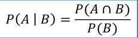

Um instituto de pesquisa colheu informações para saber as intenções de voto no segundo turno das eleições para governador de determinado estado.
Os dados estão indicados no quadro a seguir:
Intensões de voto
Porcentual
Cadidato A
26%
Cadidato B
40%
Votos nulos
14%
Votos em brancos
20%
Escolhendo aleatoriamente um dos entrevistados, verificou-se que ele não vota no candidato B.
A probabilidade de que esse eleitor vota em branco é:
FORMALIZAÇÃO: P(A/B) significa que queremos calcular a probabilidade de ocorrer o evento A, uma vez que o evento B já ocorreu.

Em uma sala de aula do ensino médio foi feita uma pesquisa que resultou nos seguintes dados tabulados no quadro:
TURMA A
TRABALHAM
NÃO TRABALHAM
MENINOS
6
9
MENINAS
3
7
Sorteando-se um estudante dessa sala de aula, calcule:
a) Qual a probabilidade de sortear um menino?
b) Qual a probabilidade de sortear um menina?
c) Qual a probabilidade de sortear um estudante que trabalha sabendo que é menino?
d) Qual a probabilidade de sortear um menino sabendo que trabalha?
Supomos que um avião com 140 passageiros saia de São Paulo com destino à Bahia. Durante esse voo, os passageiros responderam duas questões (eventos):
I)Já viajou de avião antes? (primeiro evento)
II)Já esteve na Bahia? (segundo evento)
Eventos
já viajou de avião
não viajou de avião
TOTAL
já conhecia a Bahia
85
25
110
não conhecia a Bahia
20
10
30
TOTAL
105
35
140
A partir disso, um passageiro que viaja pela primeira vez de avião é escolhido. Nesse caso, qual seria a probabilidade desse mesmo passageiro já conhecer a Bahia?
Dois dados usuais e não viciados são lançados. Sabe-se que os números observados são ímpares.
Então, a probabilidade de que a soma deles seja 8 é:
Suponha que um teste para COVID tem 95% de chance de dar positivo se a pessoa estiver infectada, mas também tem 5% de chance de dar positivo,
mesmo se a pessoa não estiver doente.
Qual a probabilidade de uma pessoa realmente estar com COVID se o teste deu positivo?